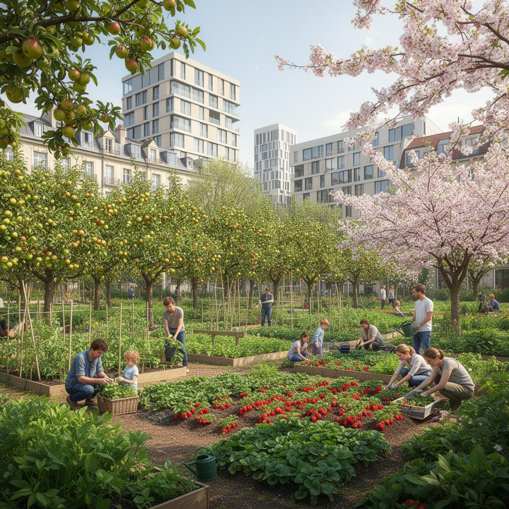

150 square miles · 4 million residents · Carbon-neutral · Located in Landlocked Europe
A city built for all 4 million of its residents — today, and for generations to come.
Explore the City
One of our goals is to ensure dense tree canopy coverage across all of our district, acting as shade and natural air filters.
Community Gardens are a key aspect of our city. We hope to provide: Apples, strawberries, cherries, and many other common foods. This program would also focus on being free for all residents.
We aim to have every residental property within a 5-minute walk of a neighborhood park. These parks would range from small community areas to larger mega parks.
While ensuring a modern and evolving urban environment, we want to ensure that wildlife can safely intergrate with our society. Providing wildlife with corridors they can utilize at will will allow us to prevent habitat destruction and displacement.
With the population size, we want to ensure the construction of skyscrapers doesn't overtake the priority of maintaining green space. Our solution is to require all skyscrapers to incoperate a rooftop green space for residents. This not only provides green space but also helps to control the cities tempeture and air quallity.
In an effort to maintain an enviormentally friendly city, all public transportation such as buses and trains will be electric.
Like Copenhagen's metro — fully automated, driverless, running 24/7.We aim to ensure every resident lives within 600 meters of a transit station. Dense transit hubs increase walkability and reduce car dependency promoting a cleaner enviornment.
Similar to Tokyo's station densityWhile our city provides public transportation, residents are encouraged to bike throught the city. In support of this, the majority of roadways are limited to cycling use.
In additon, throughout the city traffic lights are
timed to match a 12 mph pace — the average cycling pace — allowing cyclists to commute smoothly.
Working hand in hand with out cycling first initiative, our city also incoperates wide pedestrian walkways, facilitating faster, smoother travel.
To further support widespread reliance on walking,
all areas of Thornbugh have an equal distrabution of commerical stores.
Thornburgh isn't built for the wealthy or the young — it's built for all communities made up by our 4 million residents. Equity isn't an afterthought; it's the foundation.
Modeled after Amsterdam's concentric canal layout, with architecture inspired by Prague's Gothic spires and Madrid's grand boulevards. What's above ground is beautiful—but what's beneath is optimized for long-term success.
High-rises built with carbon-neutral concrete that absorbs more CO₂ than it emits during production. Every skyscraper is a carbon sink.
Lower residential areas feature stone brownstones and mid-rises inspired by Prague's historic Old Town — beautiful, durable, and thermally efficient.
Every building features living green roofs. Taller structures incorporate vertical forests — like Milan's Bosco Verticale — with trees growing on every balcony.
Glass roofs and large south-facing windows maximize natural light in Thornburgh's cold (45°F avg) climate, reducing heating needs through solar gain.
Elevated ground floors, waterfront parks as natural buffers, and elevated skyscraper foundations protect against river flooding events.
Every building recycles greywater from sinks and showers. Combined with filtered rainwater and river water, the city achieves near-zero water waste.
The true optimization of Thornburgh is underground — water filtration, energy grids, waste processing, and food systems designed for circular, zero-waste operation.
Assuming climate change continues, populations shift, and extreme weather increases — Thornburgh is built to adapt, not collapse.
Waterfront parks act as natural flood buffers. Bioswales and permeable pavements manage stormwater. The hydroelectric dam includes flood-control gates. River water filtration ensures drought-resilient water supply.
High-density vertical living accommodates population growth without sprawl. Adaptive reuse policies convert vacant structures into housing rapidly. Transit-oriented density means new arrivals integrate without car dependency.
Distributed microgrid architecture — solar, wind, and hydro across every district. No single point of failure. Battery storage in every building ensures 72-hour autonomy during grid disruptions.
Urban farms, rooftop gardens, and community orchards produce a significant portion of the city's food locally. Indoor vertical farms operate year-round regardless of climate conditions. Free supermarkets eliminate food deserts.
Carbon-neutral buildings absorb CO₂. Green roofs and urban forests moderate temperatures. The city's cold baseline (45°F avg) means heat islands are less severe, but tree canopy still provides cooling during warming summers.
Every system in Thornburgh is designed for self-sufficiency, circularity, and long-term sustainability.
Solar, wind, and hydro generation across every district. Battery storage ensures 72-hour autonomy.
Underground waste processing and circular material flows. Near-zero landfill output.
Multi-stage river water filtration, greywater recycling, and rainwater harvesting across all buildings.
Urban farms, vertical indoor farms, community orchards, and free supermarkets eliminate food deserts.
City-wide fiber network, smart traffic systems, and open data platforms for civic participation.
Neighborhood schools within walking distance. Free public libraries with maker spaces and digital access for all.